3. Introdução à linguagem SQL
Nesta secção do capítulo, apresentamos os primeiros comandos SQL que permitem criar e utilizar uma única tabela. Em geral, apresentamos uma versão simplificada dos mesmos. A sua sintaxe completa está disponível nos guias de referência do Firebird (ver parágrafo 2.2).
Uma base de dados é utilizada por pessoas com competências diversas:
- o administrador da base de dados é, geralmente, alguém que domina a linguagem SQL e as bases de dados. É ele quem cria as tabelas, uma vez que esta operação é, normalmente, realizada apenas uma vez. Ao longo do tempo, poderá ter de alterar a sua estrutura. Uma base de dados é um conjunto de tabelas ligadas por relações. É o administrador da base de dados que definirá essas relações. É também ele quem concederá direitos aos diferentes utilizadores da base de dados. Assim, indicará que determinado utilizador tem o direito de visualizar o conteúdo de uma tabela, mas não de a alterar.
- O utilizador da base de dados é quem dá vida aos dados. De acordo com os direitos concedidos pelo administrador da base de dados, irá adicionar, alterar e eliminar dados nas diferentes tabelas da base. Irá também explorá-los para extrair informações úteis para o bom funcionamento da empresa, da administração, etc.
No parágrafo 2.6, apresentámos o editor SQL da ferramenta [IB-Expert]. É esta ferramenta que vamos utilizar. Recorde-se alguns pontos:
- O editor SQL acede-se através da opção de menu [Tools/SQL Editor] ou através da tecla [F12]

Surge então uma janela [SQL Editor], na qual podemos introduzir um comando SQL:

A captura de ecrã acima será frequentemente representada pelo texto abaixo:
3.1. Os tipos de dados do Firebird
Ao criar uma tabela, é necessário indicar o tipo de dados que uma coluna da tabela pode conter. Apresentamos aqui os tipos de dados mais comuns do Firebird. É importante referir que estes tipos de dados podem variar de um SGBD para outro.
número inteiro no intervalo [-32768, 32767]: 4 | |
número inteiro no domínio [–2 147 483 648, 2 147 483 647]: -100 | |
número real com n dígitos, dos quais m após a vírgula NUMERIC(5,2): -100,23, +027,30 | |
número real aproximado com 7 algarismos significativos: 10,4 | |
número real aproximado com 15 algarismos significativos: -100.89 | |
cadeia de N caracteres exatamente. Se a cadeia armazenada tiver menos de N caracteres, é preenchida com espaços. CHAR(10): «ANGERS » (4 espaços no final) | |
cadeia com, no máximo, N caracteres VARCHAR(10): 'ANGERS' | |
uma data: '2006-01-09' (formato YYYY-MM-DD) | |
uma hora: '16:43:00' (formato HH:MM:SS) | |
data e hora em simultâneo: '2006-01-09 16:43:00' (formato YYYY-MM-DD HH:MM:SS) |
A função CAST() permite converter de um tipo para outro quando necessário. Para converter um valor V declarado como sendo do tipo T1 para o tipo T2, escreve-se: CAST(V,T2). É possível efetuar as seguintes conversões de tipo:
- número para cadeia de caracteres. Esta alteração de tipo é feita implicitamente e não requer a utilização da função CAST. Assim, a operação 1 + '3' não requer a conversão do caractere '3'. O seu resultado é o número 4.
- DATE, TIME, TIMESTAMP para cadeias de caracteres e vice-versa. Assim,
- TIMESTAMP para TIME ou DATE e vice-versa
Numa tabela, uma linha pode ter colunas sem valor. Diz-se que o valor da coluna é a constante NULL. É possível verificar a presença deste valor utilizando os operadores
IS NULL / IS NOT NULL
3.2. Criação de uma tabela
Para descobrir como criar uma tabela, começamos por criar uma no modo [Design] com IBExpert. Para tal, seguimos o método descrito no parágrafo 2.3. Criamos assim a seguinte tabela:

Esta tabela servirá para registar os livros adquiridos por uma biblioteca. O significado dos campos é o seguinte:
Name | Tipo | Restrição | Significado |
Esta tabela, que foi criada com a ferramenta IBEXPERT como assistente, poderia ter sido criada diretamente através das ordens SQL. Para conhecer essas ordens, basta consultar o separador [DDL] da tabela:

O código SQL que permitiu criar a tabela [BIBLIO] é o seguinte:
- linha 1: proprietário Firebird — indica o nível do dialeto SQL utilizado
- linha 2: proprietário Firebird — indica a família de caracteres utilizada
- linhas 6 - 14: padrão SQL: cria a tabela BIBLIO, definindo o nome e o tipo de cada uma das suas colunas.
- linha 16: padrão SQL: cria uma restrição que indica que a coluna TITRE não admite duplicados
- linha 17: padrão SQL: indica que a coluna [ID] é a chave primária da tabela. Isto significa que duas linhas da tabela não podem ter o mesmo valor para ID. Estamos aqui próximos da restrição [UNIQUE NOT NULL] da coluna [TITRE] e, de facto, a coluna TITRE poderia ter servido como chave primária. A tendência atual é utilizar chaves primárias que não têm significado e que são geradas pelo SGBD.
A sintaxe do comando [CREATE TABLE] é a seguinte:
CREATE TABLE tabela (nom_colonne1 type_colonne1 contrainte_colonne1, nom_colonne2 type_colonne2 contrainte_colonne2, ..., nom_colonnen type_colonnen contrainte_colonnen, outras restrições) | |||||||||
cria a tabela table com as colunas indicadas
|
A tabela [BIBLIO] também poderia ter sido criada com a seguinte ordem SQL:
Vamos demonstrar isso. Retomemos esta ordem num editor SQL (F12) para criar uma tabela a que chamaremos [BIBLIO2]:

Após a execução, é necessário validar a transação para ver o resultado na base de dados:
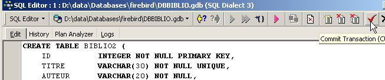
Feito isto, a tabela aparece na base de dados:

Ao clicar duas vezes no seu nome, é possível aceder à sua estrutura:

Confirmamos que esta é, de facto, a definição que criámos para a tabela [BIBLIO2]
3.3. Eliminação de uma tabela
A ordem SQL para eliminar uma tabela é a seguinte:
DROP TABLE tabela | |
Elimina [table] |
Para eliminar a tabela [BIBLIO2] que acabámos de criar, executamos agora o seguinte comando SQL:
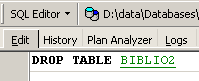
e validamo-la com [Commit]. A tabela [BIBLIO2] é eliminada:

3.4. Preenchimento de uma tabela
Inserimos uma linha na tabela [BIBLIO] que acabámos de criar:

Validemos a adição da linha através de [Commit] e, em seguida, cliquemos com o botão direito do rato na linha adicionada:

e solicitemos, tal como mostrado acima, a cópia da linha inserida para a área de transferência sob a forma de um comando SQL INSERT. Em seguida, abramos qualquer editor de texto e coloquemos (Colar / Paste) o que acabámos de copiar. Obtemos o seguinte código SQL:
INSERT INTO BIBLIO (ID,TITRE,AUTEUR,GENRE,ACHAT,PRIX,DISPONIBLE) VALUES (1,'Candide','Voltaire','Essai','18-OCT-1985',140,'o');
A sintaxe de um comando de inserção SQL é a seguinte:
insert into table [(colonne1, colonne2, ..)] values (valor1, valor2, ....) | |
adiciona uma linha (valor1, valor2, ..) à tabela table. Estes valores são atribuídos às tabelas colonne1, colonne2, ... caso existam; caso contrário, são atribuídos às colunas da tabela na ordem em que foram definidas. |
Para inserir novas linhas na tabela [BIBLIO], devem ser introduzidos os seguintes comandos INSERT no editor SQL. Executaremos e validaremos [Commit] estas ordens uma a uma. Utilizaremos o botão [New Query] para passar para a ordem INSERT seguinte.
Após validar as diferentes ordens SQL, obtemos a seguinte tabela:
 |
3.5. Consulta de uma tabela
3.5.1. Introdução
No editor SQL, introduzimos o seguinte comando:

e executemo-lo. Obtemos o seguinte resultado:
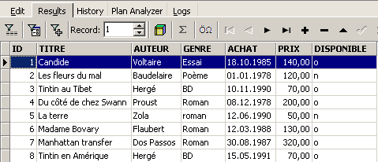
O comando SELECT permite consultar o conteúdo das tabelas da base de dados. Este comando tem uma sintaxe muito rica. Apresentamos aqui apenas a sintaxe que permite consultar uma única tabela. Abordaremos posteriormente a consulta simultânea de várias tabelas. A sintaxe do comando SQL [SELECT] é a seguinte:
SELECT [ALL|DISTINCT] [*|expression1 alias1, expression2 alias2, ...] FROM table | |
exibe os valores de expressioni para todas as linhas da tabela. expressioni pode ser uma coluna ou uma expressão mais complexa. O símbolo * designa o conjunto de colunas. Por predefinição, são apresentadas todas as linhas da tabela (ALL). Se DISTINCT estiver presente, as linhas idênticas selecionadas são apresentadas apenas uma vez. Os valores de expressioni são apresentados numa coluna com o título expressioni ou aliasi, caso este tenha sido utilizado. |
Exemplos:


Acima, associamos aliases (TITRE_DU_LIVRE, PRIX_ACHAT) às colunas solicitadas.
3.5.2. Exibição das linhas que cumprem uma condição
SELECT .... WHERE condition | |
só são apresentadas as linhas que cumprem a condição condition |
Exemplos

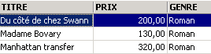
Um dos livros tem o género «romance» e não «Romance». Utilizamos a função upper, que transforma uma cadeia de caracteres em maiúsculas para obter todos os romances.
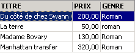
Podemos combinar condições através de operadores lógicos
ET lógica | |
OU lógica | |
Negação lógica |


 |

3.5.3. Exibição das linhas numa ordem determinada
Às sintaxes anteriores, é possível adicionar uma cláusula ORDER BY que indique a ordem de exibição pretendida:
SELECT .... ORDER BY expression1 [asc|desc], expression2 [asc|dec], ... | |
As linhas resultantes da seleção são apresentadas na ordem de 1: ordem crescente (asc / ascending, que é o valor por predefinição) ou decrescente (desc / descending) de expression1 2: em caso de igualdade de expression1, a exibição é feita de acordo com os valores de expression2 etc. |
Exemplos:


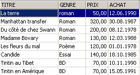
3.6. Eliminação de linhas numa tabela
DELETE FROM table [WHERE condition] | |
elimina as linhas de table verificando condition. Se esta última estiver ausente, todas as linhas são eliminadas. |
Exemplos:

Os dois comandos abaixo são emitidos um após o outro:

3.7. Alteração do conteúdo de uma tabela
update table set coluna1 = expressão1, coluna2 = expressão2, ... [where condition] | |
Para as linhas de table que verificam condition (todas as linhas, se não houver nenhuma condição), colonnei recebe o valor de expressioni. |
Exemplos:
Escrevem-se todos os géneros em maiúsculas:

Verifica-se:
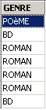
Exibimos os preços:

O preço dos romances aumenta 5%:
Verificamos:

3.8. Atualização definitiva de uma tabela
Quando se efetuam alterações numa tabela, o Firebird gera-as, na verdade, numa cópia da tabela. Estas alterações podem então ser tornadas definitivas ou anuladas através dos comandos COMMIT e ROLLBACK.
COMMIT | |
torna definitivas as atualizações efetuadas nas tabelas desde a última execução do COMMIT. |
ROLLBACK | |
anula todas as alterações efetuadas nas tabelas desde a última execução do COMMIT. |
Um COMMIT é executado implicitamente nos seguintes momentos: a) Ao terminar a sessão do Firebird b) Após cada comando que afete a estrutura das tabelas: CREATE, ALTER, DROP. |
Exemplos
No editor SQL, coloca-se a base de dados num estado conhecido, validando todas as operações realizadas desde o último COMMIT ou ROLLBACK:
Solicita-se a lista de títulos:

Eliminação de um título:
Verificação:

O título foi efetivamente eliminado. Agora, invalidamos todas as alterações efetuadas desde o último COMMIT / ROLLBACK:
Verificação:

O título que tinha sido eliminado volta a aparecer. Vamos agora solicitar a lista de preços:
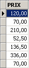
Suponhamos que todos os preços foram zerados.
Vamos verificar os preços:
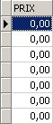
Vamos eliminar as alterações feitas na base:
e vamos verificar novamente os preços:

Recuperámos os preços iniciais.
3.9. Adicionar linhas de uma tabela a partir de outra tabela
É possível adicionar linhas de uma tabela a outra quando as suas estruturas são compatíveis. Para demonstrar isso, comecemos por criar uma tabela [BIBLIO2] com a mesma estrutura que a [BIBLIO].
No explorador de bases de dados de IBExpert, cliquemos duas vezes na tabela [BIBLIO] para aceder ao separador [DDL]:

Nesta guia, encontra-se a lista de ordens SQL que permitem gerar a tabela [BIBLIO]. Copiem todo este código para a área de transferência (CTRL-A, CTRL-C). Em seguida, vamos aceder a uma ferramenta chamada [Script Executive] que permite executar uma lista de ordens SQL:

Aparece um editor de texto, no qual podemos colar (CTRL-V) o texto que colocámos anteriormente na área de transferência:

Uma lista de comandos SQL é frequentemente designada por script SQL. O [Script Executive] permite-nos executar um script deste tipo, ao passo que o editor SQL só permitia a execução de um único comando de cada vez. O script SQL atual permite criar a tabela [BIBLIO]. Vamos fazer com que crie uma tabela chamada [BIBLIO2]. Para isso, basta alterar [BIBLIO] para [BIBLIO2]:
Vamos executar este script com o botão [Run Script] abaixo:

O script é executado:

e podemos ver a nova tabela no explorador de bases de dados:

Se clicarmos duas vezes em [BIBLIO2] para verificar o seu conteúdo, verificamos que está vazia, o que é normal:

Uma variante do comando SQL INSERT permite inserir numa tabela linhas provenientes de outra tabela:
INSERT INTO table1 [(colonne1, colonne2, ...)] SELECT coluna, coluna, ... FROM table2 WHERE condition | |
As linhas de table2 que verificam condition são adicionadas a table1. As colunas colonnea, colonneb, ... de table2 são atribuídas, por ordem, às colunas colonne1, colonne2, ... de table1 e, por isso, devem ser de um tipo compatível. |
Voltemos ao editor SQL:

e emitamos a seguinte ordem SQL:
que insere no [BIBLIO2] todas as linhas do [BIBLIO] correspondentes a um romance. Após a execução da ordem SQL, validemo-la com um [Commit]:
Feito isto, consultemos os dados da tabela [BIBLIO2]:

3.10. Eliminação de uma tabela
DROP TABLE table | |
elimina table |
Exemplo: elimina-se a tabela BIBLIO2
Valida-se a alteração:
No explorador de bases de dados, atualiza-se a visualização das tabelas:

Verifica-se que a tabela [BIBLIO2] foi eliminada:

3.11. Alteração da estrutura de uma tabela
ALTER TABLE table [ ADD nom_colonne1 type_colonne1 contrainte_colonne1] [ALTER nom_colonne2 TYPE type_colonne2] [DROP nom_colonne3] [ADD contrainte] [DROP CONSTRAINT nom_contrainte] | |
permite adicionar (ADD), alterar (ALTER) e eliminar (DROP) colunas de uma tabela. A sintaxe nom_colonnei type_colonnei contrainte_colonnei é a mesma que a de CREATE TABLE. Também é possível adicionar/eliminar restrições da tabela. |
Exemplo: Executemos sucessivamente os dois comandos SQL seguintes no editor SQL
No explorador de bases de dados, verifiquemos a estrutura da tabela [BIBLIO]:

As alterações foram aplicadas. Vamos ver como o conteúdo da tabela evoluiu:

A nova coluna [NB_PAGES] foi criada, mas não tem qualquer valor. Vamos eliminar esta coluna:
Vamos verificar a nova estrutura da tabela [BIBLIO]:

A coluna [NB_PAGES] desapareceu efetivamente.
3.12. As vistas
É possível ter uma vista parcial de uma tabela ou de várias tabelas. Uma vista funciona como uma tabela, mas não contém dados. Os seus dados são extraídos de outras tabelas ou vistas. Uma vista apresenta várias vantagens:
- Um utilizador pode estar interessado apenas em determinadas colunas e linhas de uma tabela específica. A vista permite-lhe ver apenas essas linhas e colunas.
- O proprietário de uma tabela pode querer autorizar apenas um acesso limitado a outros utilizadores. A vista permite-lhe fazê-lo. Os utilizadores que ele autorizar terão acesso apenas à vista que ele tiver definido.
3.12.1. Criação de uma vista
CREATE VIEW nom_vue AS SELECT coluna1, coluna2, ... FROM table WHERE condition [ WITH CHECK OPTION ] | |
cria a vista nom_vue. Esta é uma tabela cuja estrutura é composta pelas colunas coluna1, coluna2, ... de table e, nas linhas, pelas linhas de table que satisfazem a condição de condition (todas as linhas, caso não haja condição) | |
Esta cláusula opcional indica que as inserções e atualizações na vista não devem criar linhas que a vista não possa selecionar. |
Nota A sintaxe de CREATE VIEW é, na verdade, mais complexa do que a apresentada acima e permite, nomeadamente, criar uma visualização a partir de várias tabelas. Para tal, basta que a consulta SELECT abranja várias tabelas (ver capítulo seguinte).
Exemplos
A partir da tabela «biblio», cria-se uma vista que inclui apenas os romances (seleção de linhas) e apenas as colunas «título», «autor» e «preço» (seleção de colunas):
No explorador de bases de dados, atualizamos a vista (F5). Aparece uma vista:

É possível saber a ordem SQL associada à vista. Para tal, cliquemos duas vezes na vista [ROMANS]:

Uma vista é como uma tabela. Tem uma estrutura:

e um conteúdo:

Uma vista utiliza-se como uma tabela. É possível efetuar consultas SQL sobre ela. Aqui estão alguns exemplos para experimentar no editor SQL:

O novo romance está visível na vista [ROMANS]?

Vamos adicionar algo mais do que um romance à tabela [BIBLIO]:
SQL> insert into biblio(id,titre,auteur,genre,achat,prix,disponible) values (11,'Poèmes saturniens','Verlaine','Poème','02-sep-92',200,'o');
Vamos verificar a tabela [BIBLIO]:

Vamos verificar a vista [ROMANS]:

O livro adicionado não consta da vista [ROMANS] porque não tinha upper(género)='ROMAN'.
3.12.2. Atualização de uma vista
É possível atualizar uma vista da mesma forma que se faz com uma tabela. Todas as tabelas das quais são extraídos os dados da vista são afetadas por esta atualização. Aqui estão alguns exemplos:
SQL> insert into biblio(id,titre,auteur,genre,achat,prix,disponible) values (13,'Le Rouge et le Noir','Stendhal','Roman','03-oct-92',110,'o')


É eliminada uma linha da vista [ROMANS]:


A linha eliminada da vista [ROMANS] foi também eliminada na tabela [BIBLIO]. Passamos agora a aumentar o preço dos livros da vista [ROMANS]:
Verifica-se na [ROMANS]:

Qual foi o impacto na tabela [BIBLIO]?
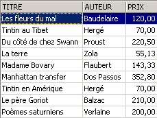
Os romances também registaram um aumento de 5% na tabela [BIBLIO].
3.12.3. Eliminar uma vista
DROP VIEW nom_vue | |
elimina a vista denominada |
Exemplo
No explorador de bases de dados, é possível atualizar a vista (F5) para verificar que a vista [ROMANS] desapareceu:

3.13. Utilização de funções de grupos
Existem funções que, em vez de atuarem em cada linha de uma tabela, atuam em grupos de linhas. Trata-se essencialmente de funções estatísticas que nos permitem obter a média, o desvio-padrão, etc., dos dados de uma coluna.
SELECT f1, f2, .., fn FROM table [ WHERE condition ] | |
calcula as funções estatísticas fi em todas as linhas da tabela, verificando a eventual condition. |
SELECT f1, f2, .., fn FROM table [ WHERE condition ] [ GROUP BY expr1, expr2, ..] | |
A palavra-chave GROUP BY tem como efeito dividir as linhas da tabela em grupos. Cada grupo contém as linhas para as quais as expressões expr1, expr2, ... têm o mesmo valor. Exemplo: GROUP BY género coloca num mesmo grupo os livros com o mesmo género. A cláusula GROUP BY autor,género colocaria no mesmo grupo os livros com o mesmo autor e o mesmo género. A cláusula WHERE condição elimina primeiro da tabela as linhas que não satisfazem a condição. Em seguida, os grupos são formados pela cláusula GROUP BY. As funções fi são então calculadas para cada grupo de linhas. |
SELECT f1, f2, .., fn FROM table [ WHERE condition ] [ GROUP BY expression] [ HAVING condition_de_groupe] | |
A cláusula HAVING filtra os grupos formados pela cláusula GROUP BY. Por isso, está sempre ligada à presença desta cláusula GROUP BY. Exemplo: GROUP BY tipo HAVING tipo!='ROMAN' |
As funções estatísticas fi disponíveis são as seguintes:
média da expressão | |
número de linhas em que a expressão tem um valor | |
número total de linhas na tabela | |
valor máximo da expressão | |
mínimo de expressões | |
soma da expressão |
Exemplos

Preço médio? Preço máximo? Preço mínimo?
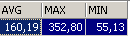

Preço médio de um romance? Preço máximo?

Quantos BD?

Quantos romances custam menos de 100 F?
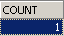

Quantos livros e qual é o preço médio por livro para livros do mesmo género?
SQL> select upper(genre) GENRE,avg(prix) PRIX_MOYEN,count(*) NOMBRE from biblio group by upper(genre)

A mesma pergunta, mas apenas para os livros que não são romances:
SQL>
select upper(genre) GENRE,avg(prix) PRIX_MOYEN,count(*) NOMBRE
from biblio
group by upper(genre)
having upper(GENRE)!='ROMAN'

A mesma questão, mas apenas para livros com um preço inferior a 150 F:
SQL>
select upper(genre) GENRE,avg(prix) PRIX_MOYEN,count(*) NOMBRE
from biblio
where prix<150
group by upper(genre)
having upper(GENRE)!='ROMAN'

A mesma questão, mas apenas se mantêm os grupos com um preço médio por livro >100 F
SQL>
select upper(genre) GENRE, avg(prix) PRIX_MOYEN,count(*) NOMBRE
from biblio
group by upper(genre)
having avg(prix)>100

3.14. Criar o script SQL « » a partir de uma tabela
A linguagem SQL é uma linguagem padrão que pode ser utilizada com vários SGBD. Para poder passar de um SGBD para outro, é aconselhável exportar uma base de dados ou apenas alguns dos seus elementos sob a forma de um script SQL que, quando executado noutro SGBD, será capaz de recriar os elementos exportados no script.
Vamos agora exportar a tabela [BIBLIO]. Escolhamos a opção [Extract Metadata]:

Repare-se que, como se vê acima, é necessário estar na base da qual se pretende exportar os elementos. A opção inicia um assistente:
 |
onde gerar o script SQL:
| |
nome do ficheiro se for selecionada a opção [File] | |
O que exportar | |
botões para selecionar (->) ou desmarcar (<-) os objetos a exportar |
Se quiséssemos exportar toda a base de dados, marcaríamos a opção [Extract All] acima. Queremos simplesmente exportar a tabela BIBLIO. Para tal, com [4], selecionamos a tabela [BIBLIO] e, com [2], indicamos um ficheiro:

Se pararmos por aqui, apenas a estrutura da tabela [BIBLIO] será exportada. Para exportar o seu conteúdo, temos de utilizar o separador [Data Tables]:
 |
Utilizemos [1] para selecionar a tabela [BIBLIO]:
 |
Utilizemos [2] para gerar o script SQL:

Aceitemos a proposta. Isto permite-nos ver o script que foi gerado no ficheiro [biblio.sql]:
- as linhas 1 a 3 são comentários
- as linhas 5 a 12 são do SQL, propriedade do Firebird
- as restantes linhas pertencem ao SQL padrão, que deverão poder ser executadas num SGBD que tenha os tipos de dados declarados na tabela BIBLIO.
Vamos executar novamente este script no Firebird para criar uma tabela BIBLIO2, que será um clone da tabela BIBLIO. Para tal, vamos utilizar o [Script Executive] (Ctrl-F12):

Vamos carregar o script [biblio.sql] que acabámos de gerar:

Alteremo-lo para manter apenas a parte relativa à criação da tabela e à inserção de linhas. A tabela passa a chamar-se [BIBLIO2]:
CREATE TABLE BIBLIO2 (
ID INTEGER NOT NULL,
TITRE VARCHAR(30) NOT NULL,
AUTEUR VARCHAR(20) NOT NULL,
GENRE VARCHAR(30) NOT NULL,
ACHAT DATE NOT NULL,
PRIX NUMERIC(6,2) DEFAULT 10 NOT NULL,
DISPONIBLE CHAR(1) NOT NULL
);
INSERT INTO BIBLIO2 (ID, TITRE, AUTEUR, GENRE, ACHAT, PRIX, DISPONIBLE) VALUES (2, 'Les fleurs du mal', 'Baudelaire', 'POèME', '1978-01-01', 120, 'n');
...
COMMIT WORK;
Vamos executar este script:
 | 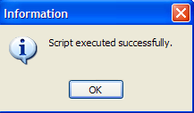 |
Podemos verificar no explorador de bases de dados que a tabela [BIBLIO2] foi efetivamente criada e que possui a estrutura e o conteúdo esperados:
 |  |